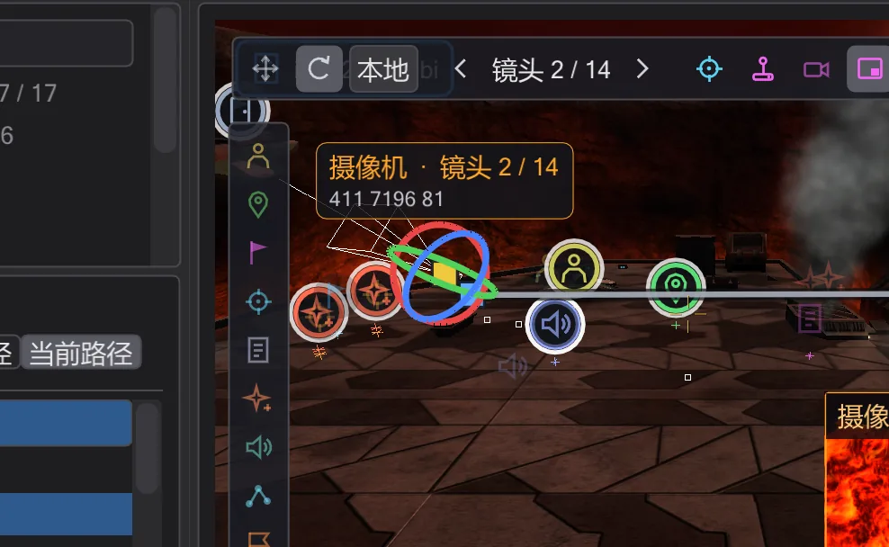

摄像机
脚本中的每个 camera MOVE 和 PAN 都是一个可以看到、抓取和驾驶的镜头——拖动时脚本会随之改写。

镜头#
在 ICARUS 中,一个镜头就是 camera ( MOVE, <位置>, <时间> ) 后接 camera ( PAN, <角度>, <时间> )。BehavEd-Remake 按顺序读取它们,并在地图上把每个镜头画成摄像机图标。单击图标选择摄像机;左侧的 镜头 列表显示每个镜头的时间和移动时间(移动 6.0 秒)。单击某行即可跳转。
- 上一个镜头 / 下一个镜头 在镜头间切换;飞到镜头 把你的视角精确移到所选镜头的位置和朝向。
- 在此新建镜头 在当前视角、所选镜头之后添加 MOVE 和 PAN。设为当前视角 把所选镜头移到你当前注视的位置。
- 删除镜头 删除镜头。在 所选镜头 下可输入精确数值:位置、方向 和 移动时间(0 = 硬切)。
移动和旋转镜头#
视图上方的工具栏用于切换操纵器:移动 显示三个箭头和中间的方块——拖动箭头沿某一轴移动,拖动方块在视平面内移动。旋转 显示俯仰、偏航和翻滚三个圆环。世界 / 本地 决定箭头跟随地图还是摄像机。松开鼠标时新数值写入脚本——可一步撤销。



如果抓取操纵器时时间轴位于两个关键帧之间,会在该时刻新建关键帧,而不是修改起点——就像动画软件的自动关键帧。驾驶时按 Enter 也会设置这样的关键帧(亲自驾驶镜头)。
摄像机路径#
选中的摄像机会绘制其路径:已飞过的部分为黄色,其余为灰色。镜头很多时会显得杂乱——当前路径 只显示进入当前镜头和通往下一个镜头的移动,全部路径 显示所有移动。两个按钮都在摄像机面板中。
亲自驾驶镜头#
驾驶 让你进入镜头:按住鼠标右键环顾四周,W A S D 移动,Q E 下降和上升。应用 把视角写入脚本,Esc 取消。驾驶时移动时间轴并按 Enter(设置关键帧),即可沿途逐个设置关键帧。驾驶时视图使用该镜头的缩放并显示游戏画面框,你可以按游戏将要显示的样子构图。
预览与透过镜头观看#
摄像机预览(位于所选摄像机的工具栏中,视图左上角)在视图右下角显示摄像机看到的小画面;拖动时会跟随操纵器。单击画面即可全屏透过摄像机观看;此时播放时间轴,就能看到与游戏中一致的过场动画。同一工具栏中的 通过摄像机 可直接切换到摄像机视角。
游戏显示的画面。 游戏按自己的窗口计算摄像机的视野,因此透过摄像机观看时,画面位于一个与游戏宽高比相同的框内:框外为黑色,电影黑边和淡入淡出在框内——正是玩家看到的画面。宽高比和 cg_fovAspectAdjust 在 视图设置 → 游戏画面 中设置。“自动”遵循首选项中的游戏规则(首选项):Movie Duels 以桌面分辨率运行,cg_fovAspectAdjust 为 1(ZOOM 保持垂直视角,宽屏在两侧看到更多);OpenJK 以 800x600 启动,值为 0(ZOOM 为水平视角)。不确定时,在游戏控制台中输入 cg_fovAspectAdjust 和 r_mode 查看。在自由视图中,一个浅色框显示放在此处的摄像机会看到的范围(缩放 90);用 在自由视图中显示游戏边框 关闭。在 camera ( ENABLE ) 之前和 DISABLE 之后,游戏以 cg_fov 80 显示玩家视角——在自行开关摄像机的脚本中,播放和预览也是如此。ROLL 使画面倾斜,camera ( PATH, ... ) 沿录制的 ROFF 路径飞行,包括其 cut、fov、fovzoom 和 fovaccel 注记。
 动画
动画ref_tag 上或注视某个 ref_tag。此时面板会提示,移动镜头就会移动地图中的该 ref_tag——脚本只引用它的名字。